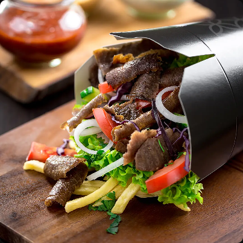

kebab w tortilli
Całe bogactwo smaków – soczyste mięso, chrupiące warzywa, aromatyczny sos – zamknięte w ciepłej, pysznej tortilli. W sam raz, żeby wziąć do ręki i wygodnie pobiec dalej.
Zaspokajając mniejszy lub większy głód – to Ty wybierasz rozmiar swojego kebaba a także rodzaj tortilli (pszenna lub pełnoziarnista).
Dürüm Kebab
kebab wołowo-barani w tortilli pszennej lub pełnoziarnistej, świeże warzywa, sos do wyboru
Dürüm Chicken
opiekany kurczak w tortilli pszennej lub pełnoziarnistej, świeże warzywa, sos do wyboru
Dürüm Falafel
falafel z ciecierzycy w tortilli pszennej lub pełnoziarnistej, świeże warzywa, sos do wyboru
Ekmek
Ekmek to tradycyjny Turecki chlebek o fantastycznej fakturze, a jak do niego dodamy kebab wołowo-barani lub opiekanego kurczaka,
warzywa i opieczemy to wyjdzie nam pyszne, sycące danie.
Ekmek Kebab
kebab wołowo-barani zapiekany w chlebku,świeże warzywa, sos do wyboru
Ekmek Chicken
opiekany kurczak zapiekany w chlebku, świeże warzywa, sos do wyboru
kebab w bułce
Tureckie Pide, w naszym autorskim wydaniu, to wypiekana na miejscu, pachnąca i miękka bułka, a w niej wszystko to, co najlepsze.
Masz ochotę na soczyste mięso, a może wolisz wersję warzywną lub z pysznym falafelem? Wybór należy do Ciebie.
Pide Kebab
kebab wołowo-barani w bułce, świeże warzywa, sos do wyboru
Pide Chicken
opiekany kurczak w bułce, świeże warzywa, sos do wyboru
Pide Falafel
opiekany kurczak w tortilli pszennej lub pełnoziarnistej, świeże warzywa, sos do wyboru
kubełek
Kubełek turecki to propozycja dla zabieganych – chwytasz kubełek i lecisz dalej. A gdy go otworzysz, znajdziesz w nim to,
co lubisz najbardziej – w jednym miejscu, idealnie skomponowane. Idealna opcja na mały głód.
Ankara Kebab
kebab wołowo-barani,frytki, sos do wyboru
Ankara Chicken
opiekany kurczak, frytki, sos do wyboru

Stambuł Kebab
kebab wołowo-barani, świeże warzywa, sos do wyboru
sałatki
Sałatki to propozycja na lekkie, lecz wciąż sycące propozycje dla tych, którzy cenią sobie zdrowe,
pełne witamin i wartości odżywczych posiłki. Co pewne, nasze sałatki nie są nudne – to feria kolorów, smaków i dodatków. Jakich? Zdecyduj sam.
Sałatka Grecka
z serem peynir, kaszą bulgur i świeżymi warzywami, sos do wyboru
Sałatka Sułtan
z kebabem wołowo-baranim, kaszą bulguri świeżymi warzywami, sos do wyboru
Sałatka Mustafa
z opiekanym kurczakiem, kaszą bulguri świeżymi warzywami, sos do wyboru
napoje
Spragniony? Mamy ogromną ofertę napojów od klasycznego ajranu, który jest fantastycznym uzupełnieniem naszych dań po wszystkie popularne marki.